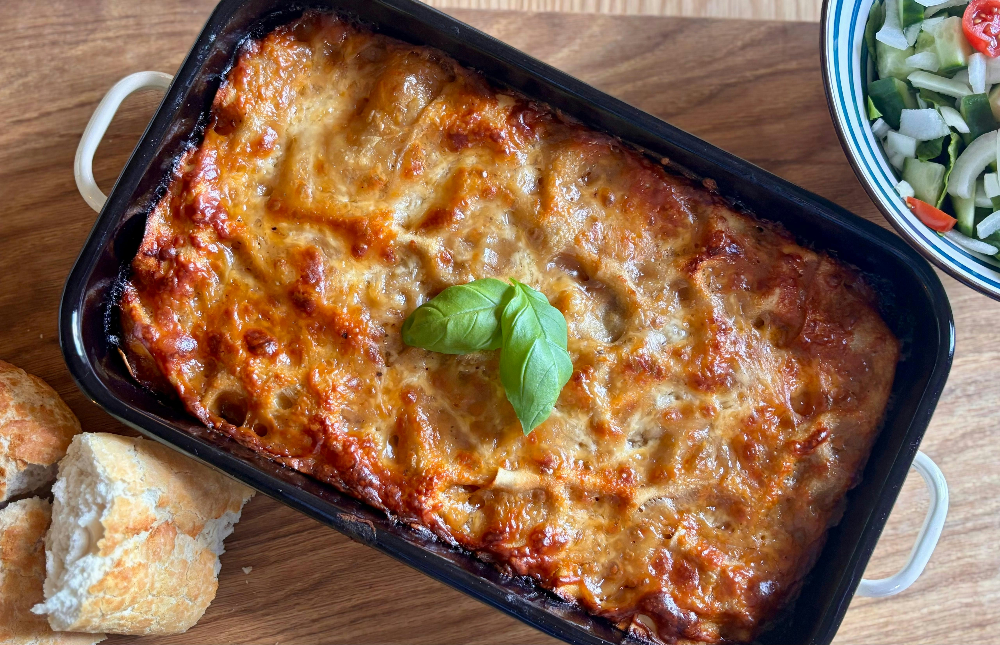
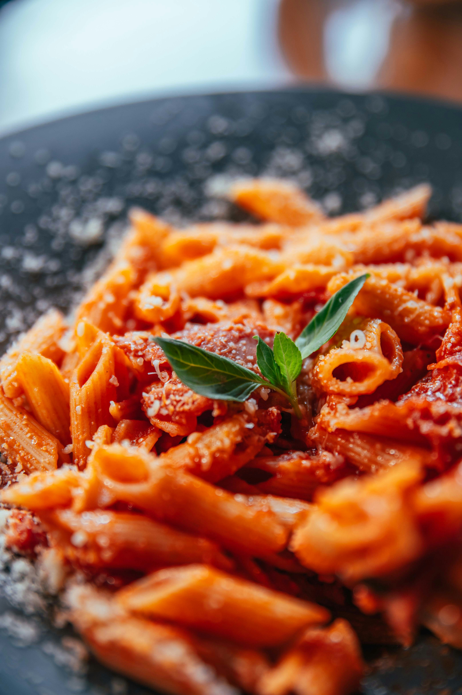
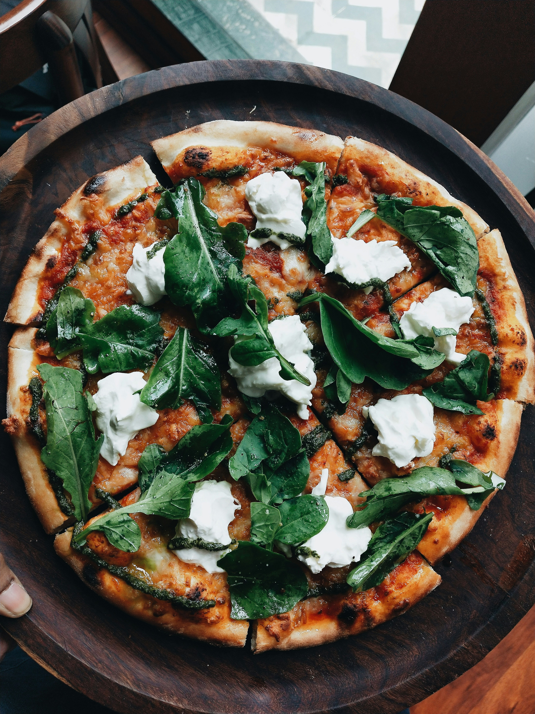
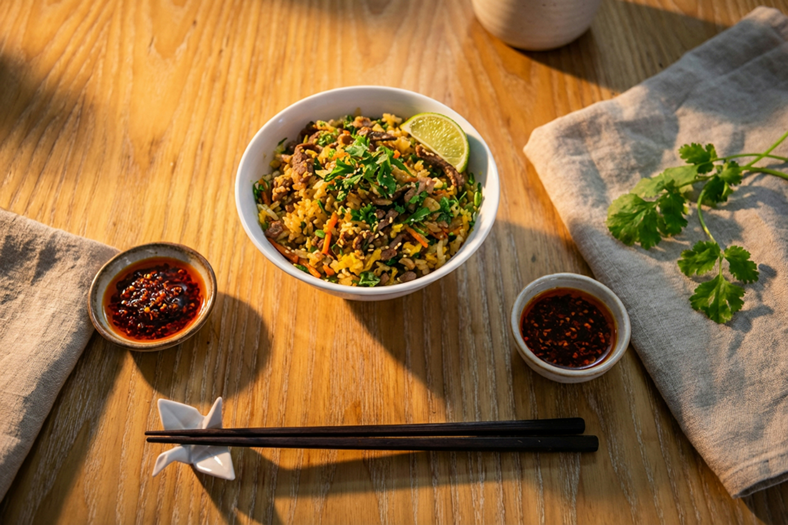

Rezepte
Probiere und entdecke neue Rezepte
Zutaten
Gyozas für 3 Personen
Für den Teig
• 250 g Weizenmehl
• 125 ml heißes Wasser
• 1 Prise Salz
Alternativ: fertige Gyoza-Teigblätter verwenden.
Für die Füllung
• 300 g Hackfleisch (Schwein oder Poulet) oder Tofu
• 1 kleine Zwiebel
• 1 Knoblauchzehe
• 1 Stück Ingwer (ca. 1 cm)
• 1 EL Sojasauce
• 1 TL Sesamöl
• 1 TL Reisessig
• Salz und Pfeffer
• Optional: Frühlingszwiebeln, Kohl und Karotten
Zum Braten und Garnieren
• 2 EL Pflanzenöl
• ca. 100 ml Wasser
• Sesam
• Frühlingszwiebeln
Für den Dip
• 3 EL Sojasauce
• 1 EL Reisessig
• 1 TL Sesamöl
• Optional: Chili oder Chiliflocken
Zubereitung
1. Teig vorbereiten
Mehl, heißes Wasser und Salz in einer Schüssel vermischen. Alles zu einem glatten Teig kneten. Den Teig zu einer Kugel formen, abdecken und etwa 30 Minuten ruhen lassen.
2. Füllung zubereiten
Hackfleisch oder Tofu, Zwiebel, Knoblauch und Ingwer fein hacken. Alles mit Sojasauce, Sesamöl, Reisessig, Salz und Pfeffer vermischen.
3. Gyozas formen
Den Teig dünn ausrollen und Kreise von etwa 8–10 cm ausstechen. Jeweils einen Teelöffel Füllung in die Mitte geben. Die Ränder mit etwas Wasser befeuchten, zusammenklappen und gut zusammendrücken.
4. Gyozas braten
Öl in einer Pfanne erhitzen. Die Gyozas hineingeben und auf der Unterseite goldbraun anbraten. Anschließend ca. 100 ml Wasser hinzufügen und sofort einen Deckel aufsetzen. Bei mittlerer Hitze etwa 5–7 Minuten dämpfen lassen. Danach den Deckel entfernen und das restliche Wasser verdampfen lassen.
5. Dip zubereiten
Sojasauce, Reisessig und Sesamöl miteinander vermischen. Nach Belieben Chili hinzufügen.
6. Servieren
Die Gyozas mit Sesam und Frühlingszwiebeln garnieren und zusammen mit dem Dip servieren.

Zutaten
Lasagne für 3 Personen
Hackfleischsauce (Bolognese)
• 300 g Hackfleisch (Rind oder gemischt)
• 1 kleine Zwiebel
• 1 Knoblauchzehe
• 1 kleine Karotte
• 400 g gehackte Tomaten (Dose)
• 2 EL Tomatenmark
• 1 EL Olivenöl
• 100 ml Wasser oder Gemüsebouillon
• Salz und Pfeffer
• 1 TL italienische Kräuter (Oregano, Basilikum)
• Optional: etwas Zucker
Béchamelsauce
• 30 g Butter
• 30 g Mehl
• 400 ml Milch
• Salz und Pfeffer
• Eine Prise Muskatnuss
Für die Lasagne
• ca. 6–9 Lasagneblätter
• 100–120 g geriebener Mozzarella
• 30 g Parmesan
Zubereitung
1. Hackfleischsauce zubereiten
Zwiebel, Knoblauch und Karotte fein schneiden. Olivenöl in einer Pfanne erhitzen und das Gemüse kurz anbraten. Hackfleisch dazugeben und krümelig braten, bis es schön gebräunt ist.
Tomatenmark einrühren und kurz mitbraten. Anschließend gehackte Tomaten und Wasser oder Bouillon hinzufügen. Mit Salz, Pfeffer und italienischen Kräutern würzen.
Die Sauce bei niedriger bis mittlerer Hitze etwa 20–25 Minuten köcheln lassen.
2. Béchamelsauce zubereiten
Butter in einem Topf schmelzen lassen. Mehl hinzufügen und unter ständigem Rühren etwa eine Minute anschwitzen.
Nach und nach die Milch dazugießen und dabei kräftig mit einem Schneebesen rühren, damit keine Klümpchen entstehen.
Die Sauce einige Minuten köcheln lassen, bis sie cremig wird. Mit Salz, Pfeffer und Muskatnuss abschmecken.
3. Lasagne schichten
Eine Auflaufform leicht einfetten. Die Zutaten in dieser Reihenfolge schichten:
• Eine dünne Schicht Hackfleischsauce
• Lasagneblätter
• Hackfleischsauce
• Béchamelsauce
• Etwas Mozzarella
Die Schichten wiederholen, bis alle Zutaten aufgebraucht sind. Die oberste Schicht sollte aus Béchamelsauce, Mozzarella und Parmesan bestehen.
4. Lasagne backen
Den Backofen auf 180 °C Ober-/Unterhitze vorheizen. Die Lasagne etwa 35–40 Minuten backen, bis die Oberfläche goldbraun und knusprig ist. Falls der Käse zu schnell dunkel wird, kannst du die Form mit Alufolie abdecken.
5. Servieren
Die Lasagne nach dem Backen etwa 5–10 Minuten ruhen lassen. Anschließend in Stücke schneiden und servieren.
Tipps
• Für mehr Geschmack kannst du einen Schuss Rotwein zur Hackfleischsauce geben.
• Je länger die Bolognese köchelt, desto intensiver wird der Geschmack.
• Mit frischem Basilikum schmeckt die Lasagne besonders lecker.
• Dazu passt ein frischer grüner Salat mit italienischem Dressing.
Zeitangaben
• Vorbereitungszeit: ca. 20 Minuten
• Kochzeit: ca. 25 Minuten
• Backzeit: ca. 35–40 Minuten
• Gesamtzeit: ca. 1 Stunde 20 Minuten
Guten Appetit! 🇮🇹❤️

Zutaten
Pasta Arrabbiata für 3 Personen
Für die Pasta
• 300 g Penne oder andere Pasta
• 2–3 Liter Wasser
• 1 EL Salz
Für die Arrabbiata-Sauce
• 400 g gehackte Tomaten (Dose)
• 2 EL Olivenöl
• 3 Knoblauchzehen
• 1 kleine Zwiebel
• 1–2 Chilischoten oder 1 TL Chiliflocken
• 2 EL Tomatenmark
• Salz und Pfeffer
• 1 TL Oregano
• ½ TL Zucker (optional)
• Frisches Basilikum
Zum Garnieren
• 40–50 g geriebener Parmesan
• Frisches Basilikum
• Etwas Olivenöl
Zubereitung
1. Zutaten vorbereiten
Zwiebel und Knoblauch fein hacken. Die Chilischoten in kleine Stücke schneiden. Wenn du es weniger scharf magst, kannst du die Kerne entfernen.
2. Sauce zubereiten
Olivenöl in einer grossen Pfanne erhitzen. Zwiebeln darin glasig anbraten. Knoblauch und Chili hinzufügen und kurz mitbraten.
Tomatenmark dazugeben und etwa eine Minute anrösten.
3. Tomatensauce kochen
Die gehackten Tomaten hinzufügen und alles gut verrühren. Mit Salz, Pfeffer, Oregano und optional etwas Zucker würzen. Die Sauce bei mittlerer bis niedriger Hitze etwa 15–20 Minuten köcheln lassen, damit sie schön aromatisch wird.
4. Pasta kochen
Während die Sauce köchelt, einen grossen Topf mit Salzwasser zum Kochen bringen. Die Pasta nach Packungsanleitung al dente kochen. Vor dem Abgiessen eine Tasse Pastawasser aufbewahren.
5. Pasta mit Sauce vermischen
Die gekochte Pasta direkt in die Pfanne zur Sauce geben. Alles gut vermischen. Falls die Sauce zu dick ist, etwas Pastawasser hinzufügen.
6. Servieren
Die Pasta auf drei Teller verteilen und mit Parmesan, frischem Basilikum und etwas Olivenöl garnieren.
Tipps
• Für mehr Schärfe zusätzliche Chiliflocken verwenden.
• Ein Schuss Pastawasser macht die Sauce besonders cremig.
• Hochwertiges Olivenöl sorgt für ein intensiveres Aroma.
• Traditionell wird Arrabbiata mit Penne serviert.
• Für mehr Würze etwas zusätzlichen Knoblauch verwenden.
Zeitangaben
• Vorbereitungszeit: ca. 10 Minuten
• Kochzeit: ca. 20 Minuten
• Gesamtzeit: ca. 30 Minuten
• Portionen: 3 Personen
Guten Appetit! 🇮🇹❤️
< & Couscous – Lockerer Couscous mit Gemüse Rezept für 3 Personen Ein leichtes, aromatisches Couscous-Gericht mit frischem Gemüse, feinen Gewürzen und einem Hauch Zitrone. Perfekt als Hauptgericht oder als Beilage zu Fleisch, Fisch oder Poulet. 🛒 Zutaten Für den Couscous: - 250 g Couscous - 250 ml Gemüsebouillon - 1 EL Olivenöl - 1 EL Butter - ½ TL Salz - Etwas Pfeffer Für das Gemüse: - 1 kleine Zucchini - 1 rote Paprika - 1 Karotte - ½ rote Zwiebel - 1 Knoblauchzehe - 100 g Kichererbsen (gekocht) - 1 EL Olivenöl Für die Gewürze: - 1 TL Paprikapulver - ½ TL Kreuzkümmel - ½ TL Kurkuma - ½ TL Zimt (optional) - Salz und Pfeffer Zum Garnieren: - Frische Petersilie oder Minze - ½ Zitrone - Optional: 30 g geröstete Mandeln oder Cashewkerne 👨🍳 Zubereitung 1. Gemüse vorbereiten Zucchini, Paprika und Karotte in kleine Würfel schneiden. Zwiebel und Knoblauch fein hacken. 2. Gemüse anbraten Olivenöl in einer grossen Pfanne erhitzen. Zwiebeln und Knoblauch kurz anbraten. Karotten, Paprika und Zucchini hinzufügen und etwa 5–7 Minuten braten, bis das Gemüse weich, aber noch leicht bissfest ist. 3. Gemüse würzen Kichererbsen zum Gemüse geben. Paprikapulver, Kreuzkümmel, Kurkuma, optional Zimt sowie Salz und Pfeffer hinzufügen. Alles gut vermischen und weitere 2 Minuten braten. 4. Couscous zubereiten Couscous in eine grosse Schüssel geben. Gemüsebouillon aufkochen und über den Couscous giessen. Olivenöl hinzufügen und die Schüssel abdecken. Etwa 5–7 Minuten quellen lassen, bis die Flüssigkeit aufgenommen wurde. 5. Couscous auflockern Butter hinzufügen und den Couscous mit einer Gabel vorsichtig auflockern, damit er schön locker und körnig wird. 6. Alles vermischen Das gebratene Gemüse unter den Couscous mischen. Mit etwas Zitronensaft abschmecken und bei Bedarf Salz und Pfeffer hinzufügen. 7. Servieren Den Couscous auf drei Teller verteilen und mit frischer Petersilie oder Minze garnieren. Nach Belieben geröstete Mandeln oder Cashewkerne darüberstreuen. 💡 Tipps - Für mehr Geschmack kannst du Rosinen oder getrocknete Aprikosen hinzufügen. - Mit Feta bekommt das Gericht eine cremige, salzige Note. - Für eine proteinreiche Variante passen Poulet oder zusätzliche Kichererbsen. - Verwende heisse Bouillon statt Wasser für einen intensiveren Geschmack. - Ein Spritzer Zitrone macht den Couscous besonders frisch. ⏱️ Zeitangaben - Vorbereitungszeit: ca. 10 Minuten - Kochzeit: ca. 15 Minuten - Quellzeit: ca. 5–7 Minuten - Gesamtzeit: ca. 30 Minuten - Portionen: 3 Personen Guten Appetit! ❤️🥘

Zutaten
Gemüsepizza für 3 Personen
Knusprige Pizza mit aromatischer Tomatensauce, geschmolzenem Mozzarella und frischem Gemüse.
Für den Pizzateig
• 300 g Weizenmehl
• 180 ml lauwarmes Wasser
• ½ Päckchen Trockenhefe (ca. 3,5 g)
• 1 EL Olivenöl
• 1 TL Salz
• ½ TL Zucker
Für die Tomatensauce
• 200 g passierte Tomaten
• 1 EL Tomatenmark
• 1 Knoblauchzehe
• 1 EL Olivenöl
• 1 TL Oregano
• ½ TL Basilikum
• Salz und Pfeffer
Für den Gemüsebelag
• 1 kleine Zucchini
• 1 rote Paprika
• 1 kleine Aubergine
• 100 g Champignons
• ½ rote Zwiebel
• 150–200 g Mozzarella
• 30 g geriebener Parmesan
• Frisches Basilikum und etwas Olivenöl
Zubereitung
1. Pizzateig vorbereiten
Mehl, Trockenhefe, Zucker und Salz in eine grosse Schüssel geben. Lauwarmes Wasser und Olivenöl hinzufügen und alles etwa 8–10 Minuten zu einem glatten Teig kneten. Abdecken und an einem warmen Ort etwa 60 Minuten gehen lassen, bis der Teig ungefähr doppelt so gross ist.
2. Tomatensauce zubereiten
Knoblauch fein hacken. Passierte Tomaten, Tomatenmark, Knoblauch und Olivenöl vermischen. Mit Oregano, Basilikum, Salz und Pfeffer würzen.
3. Gemüse vorbereiten
Zucchini, Aubergine und Paprika in dünne Stücke schneiden. Champignons in Scheiben und die rote Zwiebel in feine Ringe schneiden. Das Gemüse nach Belieben mit etwas Olivenöl und Salz vermischen.
4. Pizza formen
Den Backofen auf 240–250 °C Ober-/Unterhitze vorheizen. Den aufgegangenen Teig in drei Portionen teilen und auf einer bemehlten Arbeitsfläche dünn ausrollen. Die Pizzaböden auf Backpapier legen.
5. Pizza belegen
Tomatensauce gleichmässig auf den Pizzaböden verteilen. Mozzarella und das vorbereitete Gemüse daraufgeben und zum Schluss Parmesan darüberstreuen.
6. Pizza backen
Die Pizzen einzeln etwa 10–15 Minuten backen, bis der Rand goldbraun und der Käse geschmolzen ist.
7. Servieren
Mit frischem Basilikum und etwas Olivenöl garnieren, in Stücke schneiden und warm servieren.
Tipps
• Den Backofen für einen besonders knusprigen Boden gut vorheizen.
• Gemüse nicht zu dick schneiden, damit es gleichmässig gart.
• Auberginen und Zucchini nach Belieben vorher kurz anbraten.
• Oliven, getrocknete Tomaten oder Rucola sorgen für Abwechslung.
• Für mehr Würze Chili oder Knoblauchöl verwenden.
Zeitangaben
• Vorbereitung: ca. 20 Minuten
• Ruhezeit für den Teig: ca. 60 Minuten
• Backzeit: ca. 10–15 Minuten pro Pizza
• Gesamtzeit: ca. 1 Stunde 35 Minuten
• Portionen: 3 Personen (3 kleine Pizzen)
Guten Appetit! 🇮🇹❤️
Lass dich inspirieren!

Kartoffelstock – Cremiges Kartoffelpüree Rezept für 3 Personen Ein klassischer, wunderbar cremiger Kartoffelstock mit Butter, Milch und einer feinen Muskatnote. Perfekt als Beilage zu Fleisch, Gemüse oder einer leckeren Sauce. 🛒 Zutaten - 750 g mehligkochende Kartoffeln - 150 ml Milch - 40 g Butter - ½ TL Salz (nach Geschmack) - 1 Prise Muskatnuss - Etwas Pfeffer - Optional: 2 EL Rahm für extra Cremigkeit 👨🍳 Zubereitung 1. Kartoffeln vorbereiten Kartoffeln schälen, waschen und in gleich grosse Stücke schneiden. So werden sie gleichmässig gar. 2. Kartoffeln kochen Die Kartoffeln in einen Topf geben und mit kaltem Wasser bedecken. Etwas Salz hinzufügen. Das Wasser zum Kochen bringen und die Kartoffeln etwa 20–25 Minuten kochen lassen, bis sie weich sind. 3. Wasser abgiessen Das Kochwasser vollständig abgiessen. Die Kartoffeln kurz im warmen Topf ausdampfen lassen, damit überschüssige Feuchtigkeit verschwindet. 4. Kartoffeln zerstampfen Die Kartoffeln mit einem Kartoffelstampfer oder einer Kartoffelpresse fein zerdrücken. Wichtig: Keinen Mixer verwenden, da der Kartoffelstock sonst klebrig werden kann. 5. Milch und Butter hinzufügen Die Milch in einem kleinen Topf erwärmen und zusammen mit der Butter nach und nach zu den Kartoffeln geben. Alles gut verrühren, bis eine cremige und lockere Konsistenz entsteht. 6. Abschmecken Mit Salz, Pfeffer und Muskatnuss würzen. Nach Belieben etwas Rahm hinzufügen, um den Kartoffelstock noch cremiger zu machen. 7. Servieren Den Kartoffelstock auf drei Teller verteilen und nach Wunsch mit einem kleinen Stück Butter garnieren. 💡 Tipps - Verwende unbedingt mehligkochende Kartoffeln für einen besonders lockeren Kartoffelstock. - Die Milch sollte warm sein, damit der Kartoffelstock schön cremig wird. - Für mehr Geschmack kannst du etwas Knoblauch in der Milch erwärmen. - Frische Petersilie oder Schnittlauch passen hervorragend dazu. - Wenn der Kartoffelstock zu fest ist, einfach etwas warme Milch hinzufügen. ⏱️ Zeitangaben - Vorbereitungszeit: ca. 10 Minuten - Kochzeit: ca. 25 Minuten - Gesamtzeit: ca. 35 Minuten - Portionen: 3 Personen Guten Appetit! ❤️🥔
Gebratener Reis – Asiatischer Fried Rice Rezept für 3 Personen Ein aromatischer, gebratener Reis mit knackigem Gemüse, Ei und einer würzigen Sojasauce. Schnell zubereitet, lecker und perfekt als Hauptgericht! 🛒 Zutaten Für den Reis: - 300 g Basmatireis oder Jasminreis (ungekocht) - 3 Eier - 1 kleine Zwiebel - 2 Knoblauchzehen - 1 Karotte - 100 g Erbsen (tiefgekühlt) - 1 Frühlingszwiebel - 2–3 EL Sojasauce - 1 EL Sesamöl - 2 EL Pflanzenöl - Salz und Pfeffer Optional für mehr Geschmack: - 150 g Pouletbrust - 1 TL Ingwer (gerieben) - 1 TL Austernsauce - Sesam zum Garnieren - Etwas Chili 👨🍳 Zubereitung 1. Reis kochen Den Reis gründlich mit kaltem Wasser waschen. Anschliessend nach Packungsanleitung kochen. Den fertigen Reis abkühlen lassen. Am besten verwendest du Reis vom Vortag, da dieser beim Braten schön locker bleibt. 2. Zutaten vorbereiten Zwiebel und Knoblauch fein hacken. Die Karotte in kleine Würfel schneiden und die Frühlingszwiebel in feine Ringe schneiden. Falls du Poulet verwendest, dieses in kleine Stücke schneiden. 3. Eier anbraten Etwas Pflanzenöl in einer grossen Pfanne oder einem Wok erhitzen. Die Eier in einer Schüssel verquirlen und in die Pfanne geben. Unter Rühren zu Rührei braten. Anschliessend herausnehmen und beiseitestellen. 4. Gemüse anbraten Etwas Öl in dieselbe Pfanne geben. Zwiebeln und Knoblauch kurz anbraten. Karotten und Erbsen hinzufügen und etwa 3–4 Minuten braten. Falls du Poulet verwendest, dieses separat vollständig durchbraten, bevor du das Gemüse hinzufügst. 5. Reis braten Den abgekühlten Reis in die Pfanne geben und alles gut vermischen. Bei hoher Hitze etwa 3–5 Minuten braten, damit der Reis leicht knusprig wird. 6. Würzen Sojasauce und Sesamöl hinzufügen. Alles gut vermischen. Das Rührei wieder dazugeben und mit Pfeffer und bei Bedarf etwas Salz abschmecken. 7. Servieren Den gebratenen Reis auf drei Teller verteilen. Mit Frühlingszwiebeln und Sesam garnieren. Nach Belieben etwas Chili hinzufügen. 💡 Tipps - Reis vom Vortag eignet sich besonders gut, weil er weniger Feuchtigkeit enthält. - Brate den Reis bei hoher Hitze, damit er nicht matschig wird. - Verwende nicht zu viel Sojasauce, damit der Reis nicht zu salzig wird. - Für eine vegetarische Variante einfach das Poulet weglassen. - Du kannst auch Brokkoli, Mais, Paprika oder Pilze hinzufügen. ⏱️ Zeitangaben - Vorbereitungszeit: ca. 10 Minuten - Kochzeit: ca. 20 Minuten - Gesamtzeit: ca. 30 Minuten - Portionen: 3 Personen Guten Appetit! 🥢❤️">
Lass dich inspirieren!